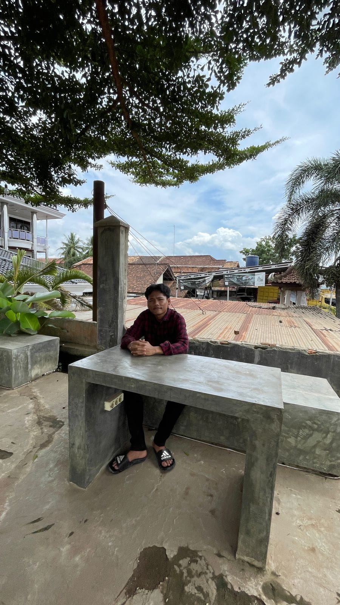
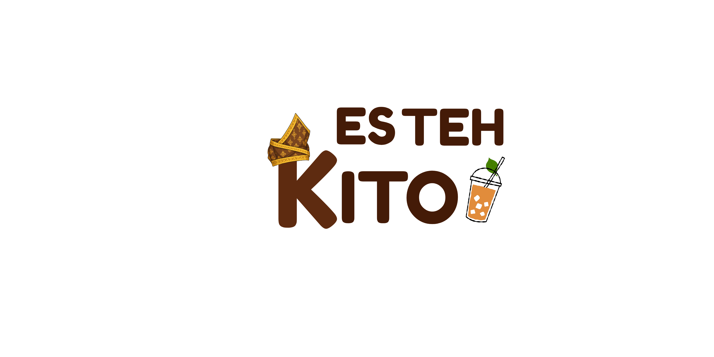
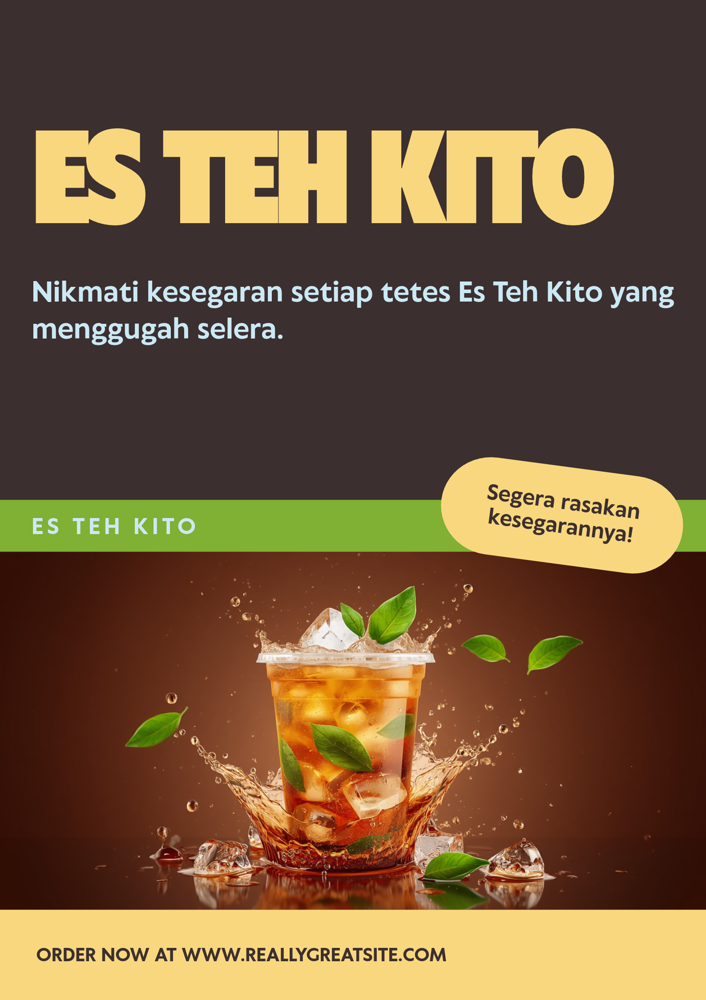

Menjalani studi S1 Teknik Informatika memberikan saya landasan teori yang kuat. Saya fokus pada eksplorasi praktis keamanan siber, menguji kerentanan aplikasi (SQLi, XSS), dan membangun sistem IT yang efisien.

Melakukan simulasi serangan dan analisis kerentanan (SQLi, XSS, SSRF, IDOR) menggunakan Burp Suite melalui platform seperti PortSwigger,Hackerone,Bugcrowd dll
Membangun proyek pemrograman dengan Python, C++, mengatur topologi jaringan di Cisco Packet Tracer, dan mengelola basis data MariaDB.
Merancang presentasi dan identitas visual menggunakan Canva, serta meracik prompt AI untuk menghasilkan karya visual yang realistis.
Selain fokus pada keamanan siber, saya juga mengeksplorasi desain visual. Berikut adalah proyek desain identitas merek (Brand Identity) dan materi promosi untuk UMKM.

Logo Design - Es Teh Kito

Poster Design - Es Teh Kito